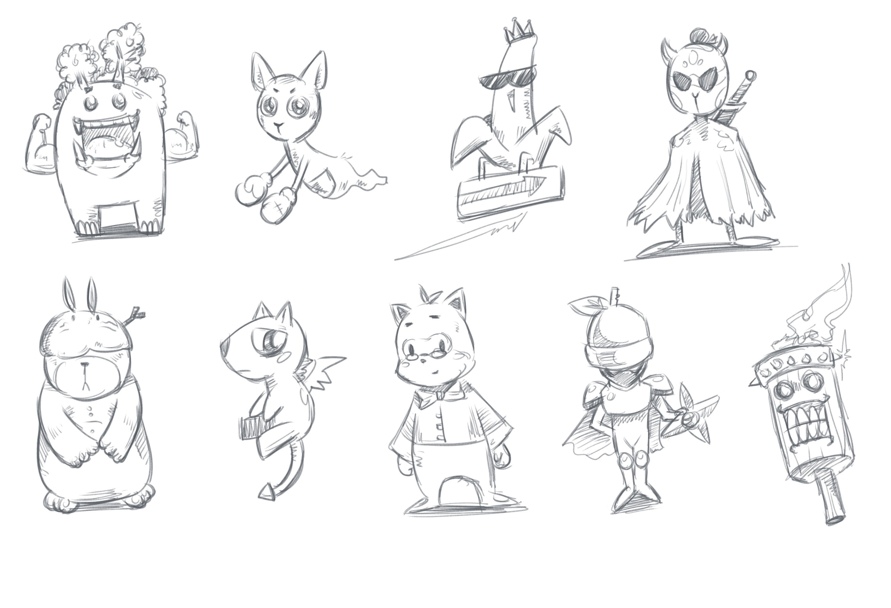
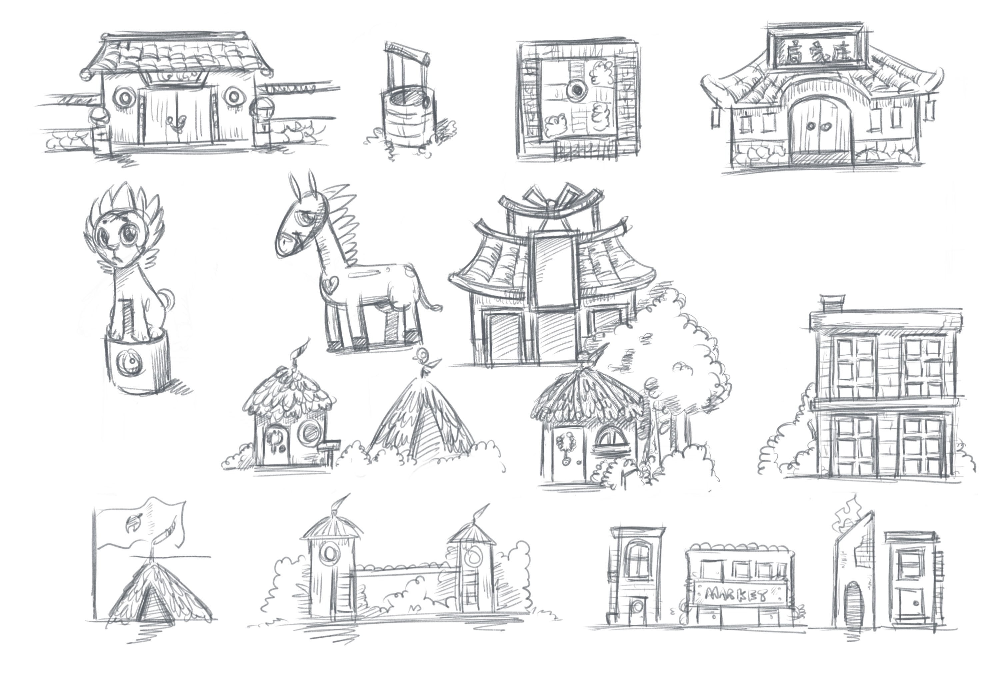

About Little Town Mage
"Little Town Mage" is an adventure game my cousin and I developed in our spare time. Players can interact with NPCs throughout the game world and engage in battles with enemies. The concept was inspired by our favorite games and personal travel experiences—some locations, roads, and scenery may feel familiar or nostalgic. Many of the NPCs are based on real family members and friends, adding a personal touch to the game's world.
We built the game using Unreal Engine 4.27.2, following a straightforward development workflow. Character animations were created with Aseprite—a simple yet powerful tool for crafting pixel art.


Environment Assets
The environment assets were created using MagicaVoxel. We organized and managed them from a unified source file, ensuring a consistent style and color palette throughout the game. The asset designs were inspired by architectural styles from around the world.
The map was created using Aseprite as a blueprint to guide the development of the game world. Our design approach starts with players in a tranquil villa, leading them through a series of challenges across the map to reach the town. Each area features distinct tones and styles, offering a varied experience. Players can also discover multiple paths to their destination, adding replayability and exploration options.

The original concept art was created in Procreate. These hand-drawn sketches were instrumental in defining the styles for the characters, scenes, and environment assets.

